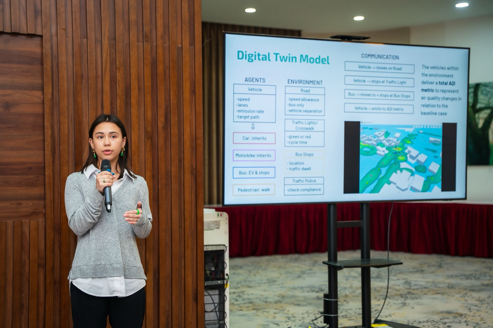
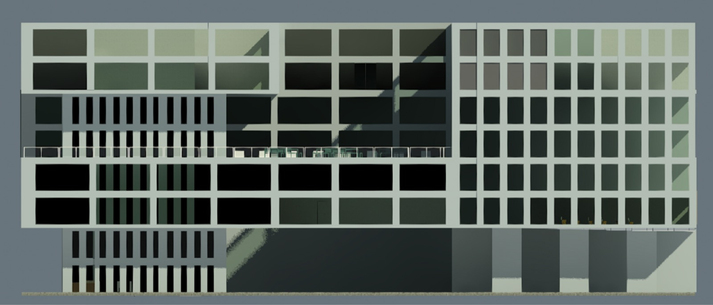
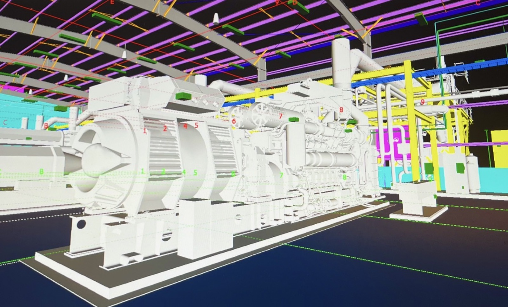

Mia
Andreu
I engineer for sustainable cities and the communities who live in them.
Drawing Index · Projects
-
P-101
Hanoi air-quality digital twin
A team-of-four digital twin of a busy intersection: separating lanes by vehicle type halved simulated AQI.
Tools GAMA platform, agent-based modeling
View sheet
HAN · Jan 2026 · SDG 11 -
P-102
The Andreu Building
I led a team of three redesigning NYU's Jacobs building in Revit on a $28M budget. First Place, Nick Russo Award.
Tools Revit, BIM, LEED Platinum, MEP
View sheet
NYC · Fall 2023 · SDG 11 · 4 -
P-103
Laser-cut acrylic lamp
Twenty identical acrylic legs, modeled in AutoCAD and recut thicker after the first set snapped.
Tools AutoCAD, laser cutting
View sheet
BKN · Summer 2025 -
P-104
Rocket fin optimization
I compared eight fin configurations in OpenRocket and by hand, then built 3D-printed and wooden prototypes to tune flight stability for an award-winning NASA Student Launch team.
Tools OpenRocket, hand calculations, 3D printing

BKN · Sep 2024 – Jan 2025 -
P-105
Building systems at WSP
I support energy analyses across 3+ client projects, producing CAD drawings, technical reports, and LEED- and ESG-aligned solutions.
Tools AutoCAD, Revit, AFT Fathom, Pipeflo, Power BI

NYC · 2025 – now · SDG 11